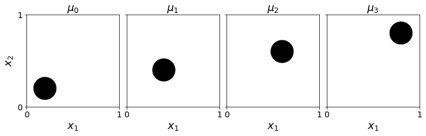
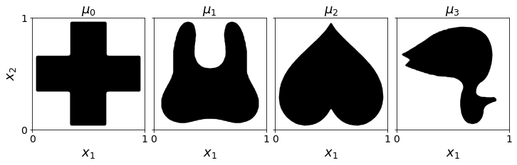

Comparison with two-marginal solver#
[40]:
from mmot import MMOTSolver
import numpy as np
import matplotlib.pyplot as plt
from scipy.ndimage import gaussian_filter
[41]:
def plot_measures(measures, filename=None):
fig, ax = plt.subplots(1, len(measures), figsize=(12,6),sharey=True)
for i in range(len(measures)):
ax[i].imshow(measures[i], origin='lower', extent=(0,1,0,1), cmap='Greys')
ax[i].set_title("$\\mu_{{ {:0d} }}$".format(i),fontsize=18)
ax[i].set_xlabel('$x_1$',fontsize=18)
ax[i].set_xticks([0,1])
ax[i].set_yticks([0,1])
ax[i].tick_params(axis='x',labelsize=14)
ax[i].tick_params(axis='y',labelsize=14)
ax[0].set_ylabel('$x_2$',fontsize=18)
plt.subplots_adjust(wspace=0.08)
if(filename is not None):
plt.savefig(filename,bbox_inches='tight')
plt.show()
Simple circles#
[42]:
# Grid of size n1 x n2
n1 = 512 # x axis
n2 = 512 # y axis
x, y = np.meshgrid(np.linspace(0.5/n1,1-0.5/n1,n1), np.linspace(0.5/n2,1-0.5/n1,n2))
r = 0.125
positions = np.array([[0.2,0.8],
[0.4,0.6],
[0.6,0.4],
[0.8,0.2]])
# measures = [None]*len(positions)
measures = [None]*(len(positions))
for i in range(len(positions)):
xc,yc = positions[i]
measures[i] = np.zeros((n2, n1))
measures[i][(x-xc)**2 + (y-yc)**2 < r**2] = 1
# Normalize
measures[i] *= n1*n2 / np.sum(measures[i])
measures[i] = np.flipud(measures[i])
[43]:
plot_measures(measures)

[44]:
unroll_node = 0
edge_list = [[0,1],
[0,2],
[2,3]]
prob = MMOTSolver(measures, edge_list, x, y, unroll_node)
res = prob.Solve(max_its=500, step_size=1.0, ftol_abs=1e-12, gtol_abs=1e-8)
Iteration, StepSize, Cost, Error, Line Its
0, 1.0000, 9.3417e-02, 1.6486e+00, 0
10, 0.0111, 2.3958e-01, 1.2637e-02, 0
20, 0.0267, 2.4002e-01, 5.5909e-04, 0
30, 0.1284, 2.4005e-01, 5.8244e-05, 0
40, 0.0257, 2.4006e-01, 5.9143e-05, 2
50, 0.0549, 2.4006e-01, 5.6647e-06, 0
60, 0.0196, 2.4006e-01, 1.2893e-06, 0
70, 0.0139, 2.4006e-01, 3.4035e-06, 0
80, 0.0099, 2.4006e-01, 1.1036e-06, 0
90, 0.0071, 2.4006e-01, 3.0247e-06, 0
100, 0.0050, 2.4006e-01, 1.0059e-06, 0
110, 0.0036, 2.4006e-01, 2.7766e-06, 0
120, 0.0025, 2.4006e-01, 9.7856e-07, 0
130, 0.0054, 2.4006e-01, 2.6620e-06, 0
140, 0.0039, 2.4006e-01, 9.7680e-07, 0
150, 0.0028, 2.4006e-01, 2.5519e-06, 0
160, 0.0029, 2.4006e-01, 9.4723e-07, 0
170, 0.0021, 2.4006e-01, 2.4685e-06, 0
180, 0.0007, 2.4006e-01, 9.2537e-07, 0
190, 0.0008, 2.4006e-01, 2.4313e-06, 0
200, 0.0002, 2.4006e-01, 9.1936e-07, 0
201, 0.0003, 2.4006e-01, 2.7202e-06, 0
Terminating due to small change in objective.
[45]:
bfm_res = [None]*(len(measures)-1)
for i in range(len(measures)-1):
prob = MMOTSolver(measures[i:i+2], [[0,1]], x, y, 0)
bfm_res[i] = prob.Solve(max_its=500, step_size=1.0, ftol_abs=1e-12, gtol_abs=1e-8)
print('MMOT Cost: ', np.sum([r.costs[-1] for r in bfm_res]), ' vs ', res.costs[-1])
Iteration, StepSize, Cost, Error, Line Its
0, 0.2500, 3.2476e-02, 3.4092e-01, 2
10, 0.0111, 4.0024e-02, 4.0951e-06, 2
20, 0.0000, 4.0024e-02, 4.2492e-06, 3
22, 0.0000, 4.0024e-02, 4.2493e-06, 3
Terminating due to small change in objective.
Iteration, StepSize, Cost, Error, Line Its
0, 0.2500, 3.2286e-02, 3.0504e-01, 2
10, 0.0667, 3.9982e-02, 1.3715e-05, 0
20, 0.0000, 3.9983e-02, 9.0152e-06, 4
20, 0.0000, 3.9983e-02, 9.0152e-06, 4
Terminating due to small change in objective.
Iteration, StepSize, Cost, Error, Line Its
0, 0.2500, 3.2826e-02, 3.2791e-01, 2
10, 0.0167, 4.0024e-02, 6.7798e-06, 0
20, 0.0007, 4.0024e-02, 5.1981e-06, 5
24, 0.0000, 4.0024e-02, 5.2415e-06, 4
Terminating due to small change in objective.
MMOT Cost: 0.12003110570772607 vs 0.24005996353531112
More Complicated Marginals#
[46]:
def sharpen(img):
blurred = gaussian_filter(img, sigma=7)
blurred[blurred<0.5*np.max(blurred)] = 0.0
blurred[blurred>0] = 1.0
blurred /= np.sum(blurred)
return blurred
def pad(img,pad_size=4):
temp = np.ones((img.shape[0]+2*pad_size,img.shape[1]+2*pad_size))
temp[pad_size:-pad_size,pad_size:-pad_size] = img
return temp
def rescale(img):
output = np.zeros((2*img.shape[0],2*img.shape[1]))
output[0::2,0::2] = img
output[1::2,0::2] = img
output[1::2,1::2] = img
output[0::2,1::2] = img
return output
[47]:
measures = [None]*4
measures[0] = sharpen(rescale(rescale(rescale(1 - pad(plt.imread('images/redcross.png')[:, :, 2])))))
measures[1] = sharpen(rescale(rescale(rescale(1 - pad(plt.imread('images/tooth.png')[:, :, 2])))))
measures[2] = sharpen(rescale(rescale(rescale(1 - pad(plt.imread('images/heart.png')[:, :, 2])))))
measures[3] = sharpen(rescale(rescale(rescale(1 - pad(plt.imread('images/duck.png')[:, :, 2])))))
for i in range(len(measures)):
measures[i] *= np.prod(measures[i].shape)/np.sum(measures[i])
print('Marginal size = ', measures[0].shape)
# Grid of size n1 x n2
n1,n2 = measures[0].shape
x, y = np.meshgrid(np.linspace(0.5/n1,1-0.5/n1,n1), np.linspace(0.5/n2,1-0.5/n1,n2))
Marginal size = (1088, 1088)
[48]:
plot_measures(measures)

[49]:
prob = MMOTSolver(measures, edge_list, x, y, unroll_node)
res = prob.Solve(max_its=500, step_size=1.0, ftol_abs=1e-12, gtol_abs=1e-6)
Iteration, StepSize, Cost, Error, Line Its
0, 1.0000, 8.5021e-03, 9.3736e-02, 0
10, 0.1250, 3.5732e-02, 2.0738e-03, 3
20, 0.3003, 3.6298e-02, 1.0495e-04, 0
30, 0.7119, 3.6372e-02, 2.8188e-05, 0
40, 0.0625, 3.6388e-02, 3.4803e-05, 4
50, 0.1406, 3.6395e-02, 5.4176e-06, 0
60, 0.3379, 3.6398e-02, 2.3204e-06, 0
70, 0.7119, 3.6401e-02, 1.5874e-06, 0
80, 0.0713, 3.6401e-02, 9.7082e-07, 0
80, 0.0713, 3.6401e-02, 9.7082e-07, 0
Terminating due to small gradient norm.
Two-Marginal Solve#
[50]:
bfm_res = [None]*(len(measures)-1)
for i in range(len(measures)-1):
prob = MMOTSolver(measures[i:i+2], [[0,1]], x, y, 0)
bfm_res[i] = prob.Solve(max_its=500, step_size=1.0, ftol_abs=1e-12, gtol_abs=1e-8)
Iteration, StepSize, Cost, Error, Line Its
0, 1.0000, 3.9277e-03, 1.7696e-02, 0
10, 0.5625, 6.9856e-03, 5.5898e-05, 0
20, 1.0000, 6.9891e-03, 3.3346e-07, 0
30, 1.0000, 6.9895e-03, 1.7784e-07, 0
40, 0.3560, 6.9897e-03, 1.4233e-07, 1
50, 0.0422, 6.9897e-03, 1.4873e-07, 1
60, 0.0100, 6.9897e-03, 1.4910e-07, 1
70, 0.0024, 6.9897e-03, 1.4902e-07, 1
80, 0.0006, 6.9897e-03, 1.4900e-07, 1
90, 0.0001, 6.9897e-03, 1.4900e-07, 1
96, 0.0001, 6.9897e-03, 1.4899e-07, 1
Terminating due to small change in objective.
Iteration, StepSize, Cost, Error, Line Its
0, 1.0000, 1.6247e-03, 3.9726e-03, 0
10, 0.0527, 2.1492e-03, 5.1514e-06, 4
20, 0.0625, 2.1494e-03, 6.7772e-07, 4
30, 0.1406, 2.1494e-03, 6.3447e-08, 0
40, 0.1126, 2.1495e-03, 3.7958e-08, 0
50, 0.0267, 2.1495e-03, 2.8944e-08, 0
60, 0.0063, 2.1495e-03, 2.8165e-08, 0
70, 0.0015, 2.1495e-03, 2.7998e-08, 0
76, 0.0006, 2.1495e-03, 2.7966e-08, 0
Terminating due to small change in objective.
Iteration, StepSize, Cost, Error, Line Its
0, 1.0000, 1.7943e-02, 5.9142e-02, 0
10, 0.0938, 2.2656e-02, 8.5351e-04, 0
20, 0.0938, 2.2769e-02, 3.6912e-06, 0
30, 0.1001, 2.2769e-02, 1.6354e-07, 0
40, 0.0007, 2.2769e-02, 1.5878e-07, 0
45, 0.0000, 2.2769e-02, 1.6728e-07, 2
Terminating due to small change in objective.
[51]:
print('MMOT Cost: ', np.sum([r.costs[-1] for r in bfm_res]), ' vs ', res.costs[-1])
MMOT Cost: 0.03190864936409036 vs 0.036401322690964286